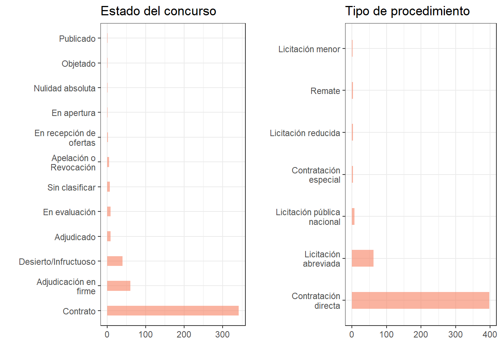
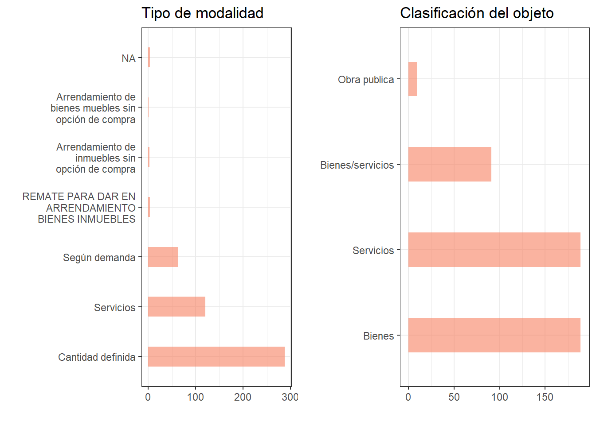
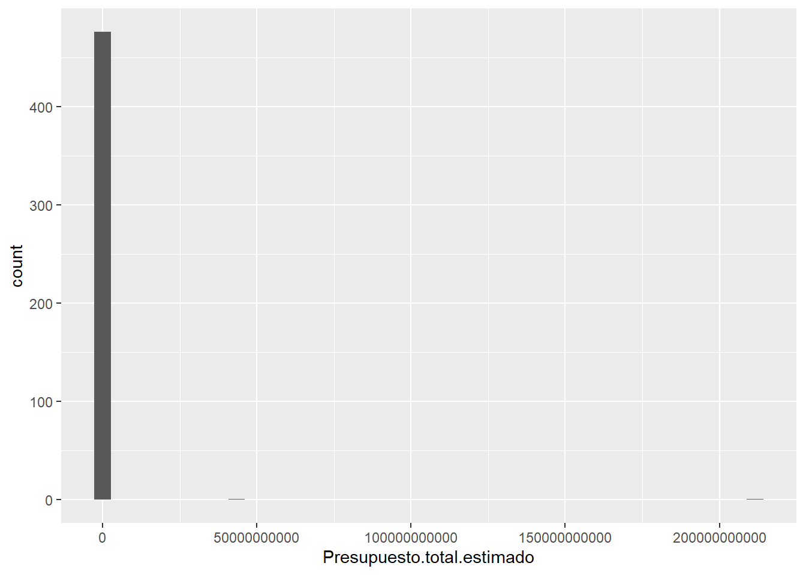
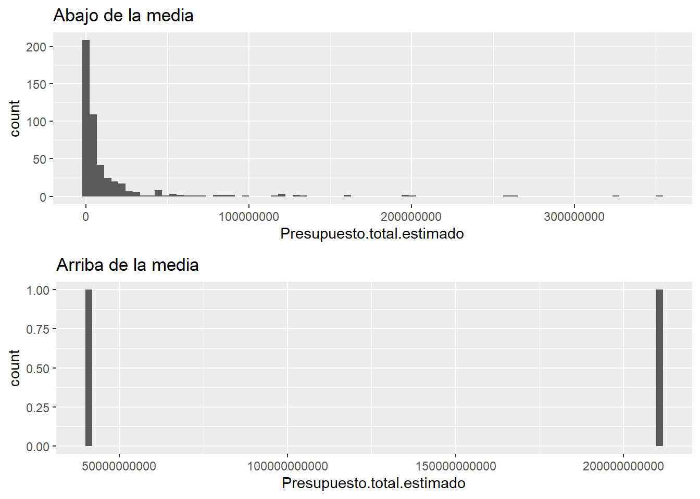
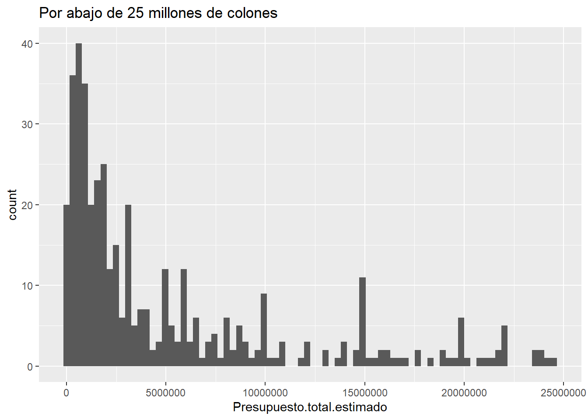

library(tidyverse)
library(shiny)
library(ggpubr)
library(stringdist)
library(sf)
options(scipen=999)
setwd("~/GitHub/R-Geografia-y-Data/posts/SICOP_Representacion")
data.sicop <- read.csv("output/csv/TablaLimpiaSICOP.csv")
cant.sp <- read_sf("sp/LimiteCantonal5K_.shp")#, options = "ENCODING=WINDOWS-1252")
data.sicop$fecha.hora.publicacion <- as.Date(data.sicop$Fecha.hora.de.publicación,
"%d/%m/%Y %H:%M")
data.sicop$Estado.del.concurso <- sub("^$", "Sin clasificar",
data.sicop$Estado.del.concurso)Representación de datos
La representación de datos es una técnica utilizada para obtener información de los datos al utilizar señales visuales tales como gráficos o mapas. Su utilidad radica en que colabora a entender grandes cantidades de datos de una forma sencilla.
Representación general
Con los datos obtenidos es posible aplicar diferentes formas de representación. Algunas de las formas mas simples de representación son: diagramas de barras. En este caso se utiliza para conocer la frecuencia de elementos en una variable. En este caso se aplica con las variables:
Estado del concurso
Tipo de Procedimiento
Tipo de modalidad
Clasificación del objeto
# EL COUNT DE PLYR PARA para cambiar los valores vacios por "Sin clasificar"
data.filter <- plyr::count(data.sicop$Estado.del.concurso)
# Es posible explorar algunos atributos de interés
# Se aplica el mismo procedimiento para las variables mencionadas
concurso <- plyr::count(data.sicop$Estado.del.concurso) %>% ggplot(aes(x = reorder(
x,-freq),y = freq)) +
geom_bar(stat = "identity",fill = "#f68060", alpha = 0.6, width = 0.4)+
coord_flip()+
scale_x_discrete(labels = label_wrap_gen(20)) +
xlab("")+
ylab("") +
ggtitle("Estado del concurso") +
theme_bw()Para Estado del concurso y Tipo de procedimiento se obtiene:

Para Tipo de modalidad y Clasificación del objeto se obtiene:

También es posible explorar la frecuencia de los presupuestos totales estimado mediante un histograma. Al graficar se obtiene el siguiente resultado:
ggplot(data.sicop, aes(x=Presupuesto.total.estimado)) +
geom_histogram(bins = 40)
Al existir una gran concentración de datos en bajos presupuestos y algunos dispersos en altos presupuestos el histograma no ofrece mucho detalle. Para obtener más detalle es posible filtrar por los valores que estén por abajo y por arriba de la media.
# hist
# POR ABAJO DE LA MEDIA
abajo <- data.sicop %>% filter(Presupuesto.total.estimado <
mean(Presupuesto.total.estimado)) %>%
ggplot(aes(x=Presupuesto.total.estimado)) +
geom_histogram(bins = 80) +
ggtitle("Abajo de la media")
# POR ARRIBA DE LA MEDIA
arriba <- data.sicop %>% filter(Presupuesto.total.estimado >
mean(Presupuesto.total.estimado)) %>%
ggplot(aes(x=Presupuesto.total.estimado)) +
geom_histogram(bins = 80) +
ggtitle("Arriba de la media")
ggarrange(abajo, arriba,
ncol = 1, nrow = 2)
Se observa que la mayoría de valores se encuentra por debajo de la media. Para observar con más detalle, es posible filtrar aun más los datos. En este caso se filtra por los valores menores de 25 000 000 CRC (esto para apreciar la mayor concentración de datos).
data.sicop %>% filter(Presupuesto.total.estimado < 25000000) %>%
ggplot(aes(x=Presupuesto.total.estimado)) +
geom_histogram(bins = 80) +
ggtitle("Por abajo de 25 millones de colones")
Representación espacial de datos
Cada elemento que fue scrapeado en las etapas anteriores está asociado a una municipalidad, las cuales pueden asociarse a su ubicación puntual (coordenadas de ubicación de la municipalidad) o a toda la unidad espacial (cantón). En otra entrada de foro se obtuvieron las ubicaciones puntuales de las municipalidades del país. Dichos puntos pueden ser asociados a la información obtenida del SICOP para realizar una representación espacial. Para simplificar, sería posible agregar las coordenadas a la capa de cantones; también se añaden los datos de conteo de categorías para las variables Estado del concurso, Tipo de procedimiento y Tipo de modalidad.
# Se leen los puntos de las municipalidades
puntos_muni <- read.csv("csv/Puntos_Municipalidades.csv")
data.sicop.graficos <- read.csv("csv/Tab_Cod_SICOP.csv")
# Se añade formato
colnames(data.sicop.graficos) <- str_replace_all(colnames(data.sicop.graficos),pattern = "\\.",replacement = " ")
colnames(data.sicop.graficos)[2] <- "canton.sint"
# Se crea una columna con cantones sin tilde (facilita join despues)
# Se utiliza un array de caracteres no deseados
unwanted_array <- list('Š'='S', 'š'='s', 'Ž'='Z', 'ž'='z','À'='A', 'Á'='A', 'Â'='A','Ã'='A', 'Ä'='A', 'Å'='A', 'Æ'='A', 'Ç'='C', 'È'='E', 'É'='E','Ê'='E', 'Ë'='E', 'Ì'='I', 'Í'='I', 'Î'='I', 'Ï'='I', 'Ò'='O', 'Ó'='O', 'Ô'='O', 'Õ'='O', 'Ö'='O', 'Ø'='O', 'Ù'='U','Ú'='U', 'Û'='U', 'Ü'='U', 'Ý'='Y', 'Þ'='B', 'ß'='Ss', 'à'='a', 'á'='a', 'â'='a', 'ã'='a','ä'='a','å'='a', 'æ'='a', 'ç'='c','è'='e', 'é'='e', 'ê'='e', 'ë'='e','ì'='i','í'='i', 'î'='i', 'ï'='i', 'ð'='o', 'ò'='o', 'ó'='o', 'ô'='o', 'õ'='o','ö'='o', 'ø'='o', 'ù'='u', 'ú'='u', 'û'='u', 'ý'='y', 'ý'='y', 'þ'='b', 'ÿ'='y' )
# Se aplica lo siguiente para crear una columna de cantones sin tilde
cant.sp$canton.sint <- gsubfn::gsubfn(paste(names(unwanted_array),
collapse='|'),
unwanted_array,
as.character(cant.sp$canton))
cant.sp <- left_join(cant.sp,data.sicop.graficos, by = "canton.sint")
cant.sp$sum.procedimiento <- cant.sp$`Licitación abreviada` + cant.sp$`Licitación menor` + cant.sp$`Licitación pública nacional` + cant.sp$`Licitación reducida` + cant.sp$`Contratación especial` + cant.sp$`Contratación directa` + cant.sp$Remate
# Añadir coordenadas a la capa de cantones
cant.sp$X <- puntos_muni$X
cant.sp$Y <- puntos_muni$Y
# Se agrupa por nombres (cantones) y se hace un resumen por suma del presupuesto
# y se convierte a data frame
data.sicop.presup <- data.sicop %>% group_by(Nombre) %>%
summarise(presup.tot.est=sum(Presupuesto.total.estimado),
.groups = 'drop') %>%
as.data.frame()
# Se cambia el nombre de columna para facilitar el join
colnames(data.sicop.presup) <- c("canton","presup.tot.est")
# Se hace el join por la columna "canton"
cant.sp <- left_join(cant.sp,data.sicop.presup, by = "canton")Con los datos actuales es posible plasmarlos con la librería leaflet. Se utiliza radius para aumentar el tamaño de los puntos según el presupuesto. También se añade un popup (al dar click a cada punto) que muestre la provincia, cantón y el presupuesto.
library(leaflet)
library(scales)
leaflet() %>% addTiles() %>%
addCircleMarkers(lng = as.numeric(cant.sp$X),
lat = as.numeric(cant.sp$Y),
radius = rescale(cant.sp$presup.tot.est, to = c(5,40)),
popup = paste0("<strong>Provincia: </strong>",cant.sp$provincia,
"<br><strong>","Cantón: </strong>",cant.sp$canton,
"<br><strong>","Presupuesto total: </strong>₡",
formatC(cant.sp$presup.tot.est,
format="fg", big.mark=',')))Representación con Shiny
También es posible representar el presupuesto con un mapa de coropletas aunque en este caso no se aplicará dicho método. Mediante la librería shiny y shinydashboard (Chang et al., 2022; Chang & Borges Ribeiro, 2021) es posible llegar al siguiente resultado:
Referencias
Chang, W., & Borges Ribeiro, B. (2021). shinydashboard: Create Dashboards with ’Shiny’. https://CRAN.R-project.org/package=shinydashboard
Chang, W., Cheng, J., Allaire, J., Sievert, C., Schloerke, B., Xie, Y., Allen, J., McPherson, J., Dipert, A., & Borges, B. (2022). shiny: Web Application Framework for R. https://CRAN.R-project.org/package=shiny